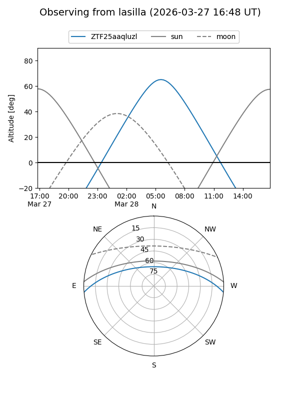
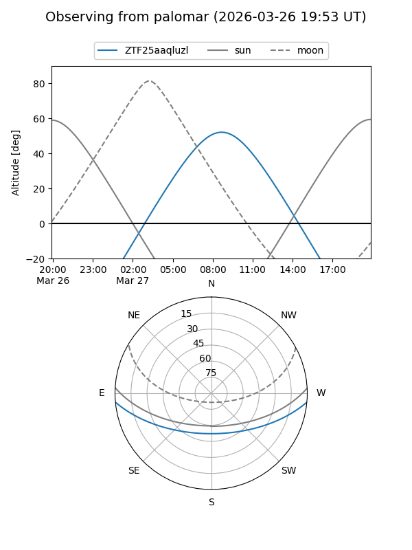

ZTF25aaqluzl
Target ZTF25aaqluzl at 2026-03-27 11:28
Aliases and brokers:
FINK: link
Lasair: link
ALeRCE: link
alt names
ZTF25aaqluzl (ztf,fink_ztf)
Coordinates:
equatorial (ra, dec) = 197.7287,-4.32550
equatorial (HMS+DMS) = 13:10:54.89,-04:19:31.79
galactic (l, b) = (312.1739,+58.19632)
Flags:
Photometry:
last ztfg=17.12, ztfr=18.04
1 ztfg, 1 ztfr detections
Lightcurve
Visibility


Additional plots